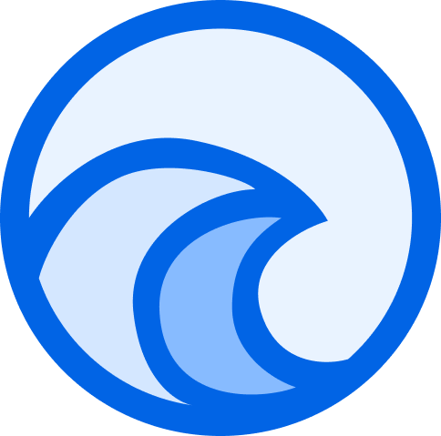

WaveOS
WaveOS is a Custom Fork of Android which focuses on stability, aesthetics, functionalities, and performance without compromising on Usability. Various optimization and upstream as well as backport are merged from CAF to provide you always up to dated patches fixes and battery life.
The ROM uses its design language which has been inspired by Oxygen OS but has been polished by us and can be tweaked by you to your heart's content. We decided to add customization and features that you are likely to use rather than bloating the ROM and making the UX intrusive.
Website made with 💓 and some ☕ by myfrom